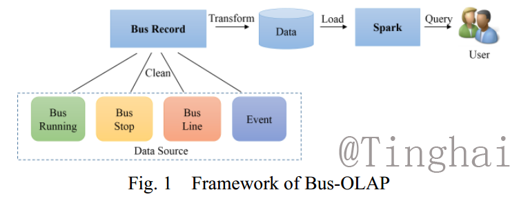

Bus-OLAP: A Bus Journey Data Management Model for Non-on-time Events Query
面向非准点事件查询的公交巴士运行数据管理
Data Management
Bus Data
Spark
KNN
RKNN
Bit Expression
Introduce
Increasing the on-time rate of bus service can prompt the
people's willingness to travel by bus, which is an effective measure to
mitigate the city traffic congestion. Performing queries on the bus arrival can be used to identify and analyze various kinds of non-on-time
events that happened during the bus journey, which is helpful for detecting the factors of delaying events, and providing decision support
for optimizing the bus schedules. We propose a data management model, called Bus-OLAP, for querying bus monitoring data, considering the
characteristics of bus monitoring data and the scenarios of on-time analysis. While fulfilling typical requirements of bus monitoring data analysis,
Bus-OLAP not only provides a flexible way to manage the data and to
implement multiple granularity data query and update, but also supports
distributed query and computation. The experiments on real-world bus
monitoring data verify that Bus-OLAP is effective and efficient.
Framework

Figure 1 illustrates the framework of Bus-OLAP, includes cleaning and fusing the data source to get the bus records, transforming the records into bit vectors and store them by the form of bit vector, and conducting the parallel query and computing by Spark.
Result
As shown in Figure 11, we can observe the moving of traffic flow from 15:00 to 19:00.
We think the possible reason is the different zones of living and working
And Figure 12 shows the heat map of bus delay, which verifies the effectiveness of delay aggregation detection.
For the spatial related queries on KNN and RKNN, we set k = 8, and the
ID of target bus stop is “560”. Figure 9 presents an example of spatial related
query. Figure 9 (a) illustrates the query of KNN, the red point is the target bus
stop “560” and the blue points are the KNN bus stops that nearest to “560”.
Similarly, Figure 9 (b) shows the RKNN query of bus stop “560” and there are
ten bus stops whose 8-NN bus stops include “560”.
Refference
1. Syrjrinne, P., Nummenmaa, J., Thanisch, P., Kerminen, R., Hakulinen, E.:
Analysing traffic fluency from bus data. IET Intelligent Transport System 9(6)
(2015) 566–572
2. Wu, X., Duan, L., Pang, T., Nummenmaa, J.: Detection of statistically signif-
icant bus delay aggregation by spatial-temporal scanning. In: Proc. of APWeb
Workshops. (2016) 277–288
3. Syrjrinne, P., Nummenmaa, J.: Improving usability of open public transportation
data. In: 22nd ITS World Congress. (2015) 5–9